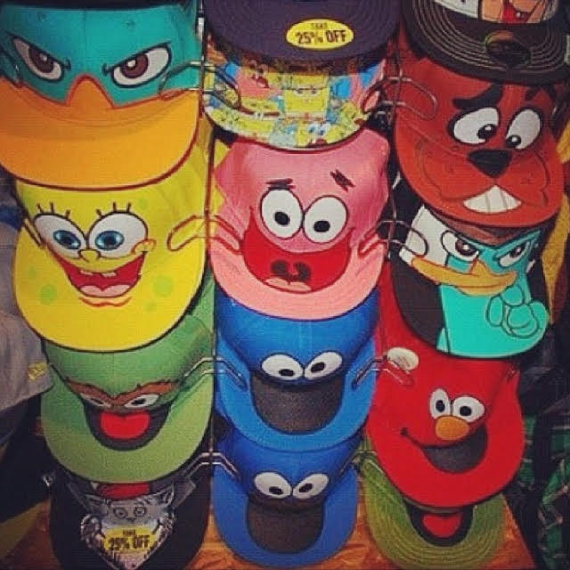
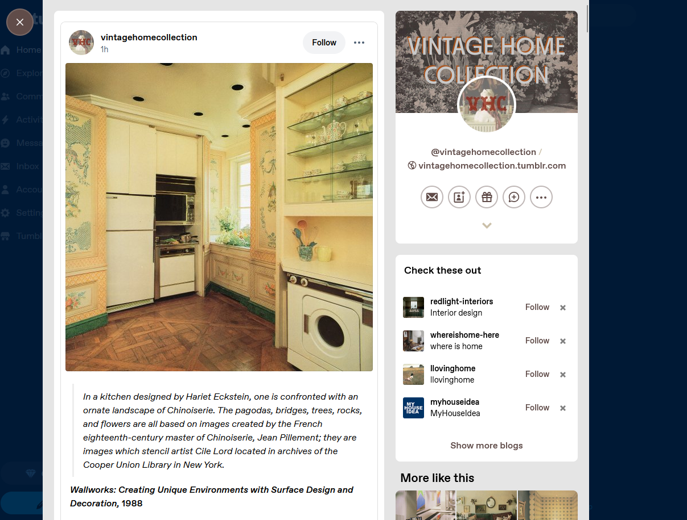
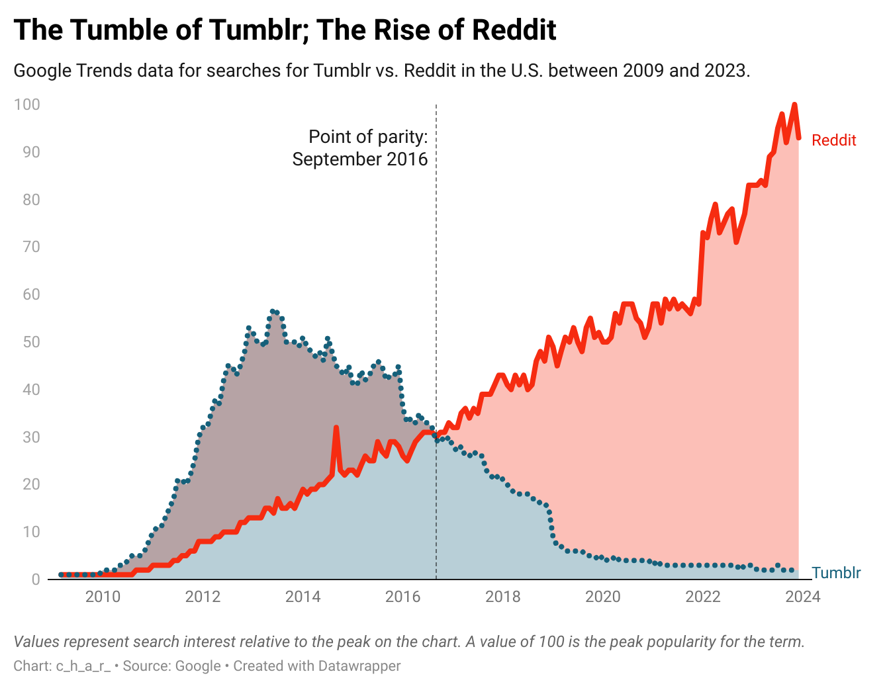

Do you love weird hats?

Ever have a niche you can’t scratch?If it was an itch it would be in a place you couldn’t reach without help. It’s the same with a niche:You need friends to talk about and develop one. Like, what if you collected strange hats? Who would care, who would share?

Tumblr has it! Tumblr is a platform that was launched in 2007, a year after Twitter. It was made for microblogging(short frequent posts). It was basically Twitter with images and an aesthetic focus.
Why was Tumblr popular?
Tumblr has always been about aesthetics. Whether it was clothing,food, or anything else, it had to do with the aesthetic of it, and people loved having a platform based on aesthetics. Not to mention it helped new trends and aesthetics spread quickly.
What do people talk about when they talk about aesthetics? Here's a list of trending Tumblr topics. Are there any here that speak to you, where you’d have something to add?
Top Tumblr aesthetics
- Vintage/Retro
- Polaroids
- Warm colors
- Old flim photos
- Cottage core
- Wildflowers
- Forest lighting
- Handmade crafts
- Indie sleaze
- Messy
- Glitter
- Blurred photos
- Pastel goth
- Pastel colors
- bats
- Cartoon-ish style
- Alternative
- Dark/muted color palettes
- Graffiti
- High contrast lighting
The Rise and Fall of Tumblr.

Tumblr began to get popular in 2011 and it peaked in 2014 with over 100 million active blogs, but around 2017-2018 tumblr began to lose around %30 of users after some content bans on their platform,Yahoo also wasn’t able to meet revenue targets, and ended up selling itself and Tumblr to Verizon Communications. Even now tumblr hasn’t recovered because of competing platforms having more to offer. It was recently bought by Automattic, the lead developers of WordPress.
Tumblr is backWhat happened to Tumblr
Tumblr plans